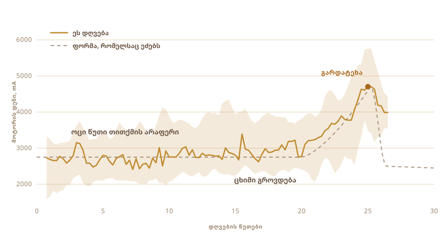

01
მხოლოდ ვჭამდი
ერბო, რომელიც მე ვიცი, სოფლებიდან მოდიოდა. სხვა რაღაცისგან დარჩენილ ქილებში, იმ ადამიანებისგან, რომლებიც მას ერთი და იმავე წესით იმდენი ხანია აკეთებენ, რომ იქ ამას უკვე არავინ თვლის ხერხად.
მაღაზიის ქილას გემოთი არ ჰგავს.
და არც ერთი პარტია არ გამიკეთებია. არ ვიცოდი, რამდენ ხანს უნდა დამედგა რძე, რამდენად ცივი უნდა იყოს მაწონი, ან როგორ უნდა ჟღერდეს ქვაბი, როცა მზად არის.
02
მაწვნით იწყება, არა ნაღებით
ინდუსტრიული ერბო თითქმის ყოველთვის ნაღებით იწყება. ტრადიციული გზა ერთი დღით, ხანდახან ორით ადრე იწყება, ნაღებით, უფრო სწორად შემოხარშული სრული რძით, რომელსაც მაწვნად აყენებენ და ღამით ტოვებენ, რომ მოიმჟავოს.
ეს დამჟავება არის მთელი საქმე. მის გარეშე უბრალოდ დადნობილი კარაქი გამოგდის. ისიც კარგია, მაგრამ იმ ერბოდან, რომელიც მე ვიცი, ძალიან შორს არის.

03
ორი დღე მაგიდაზე
თბილი რძე, ერთი კოვზი გუშინდელი მაწონი შიგნით ავურიე, მერე მთელი ღამე ხელი არ მივაკარე და ბაქტერიებს თავისი საქმე ვაკეთებინე. ჩემი მაწონი ორი დღე იდგა გარეთ.
ეს ფერმენტაციაა და სწორედ ეს ნაბიჯი ამოვარდნილია კომერციული ვერსიიდან. ცოცხალი კულტურები, ძირითადად ლაქტობაცილები, ლაქტოზას გადაამუშავებენ და რძემჟავად აქცევენ. რძე სქელდება. მჟავდება. დილით ეს უკვე სხვა რაღაცაა.
აქედან მოდის ყველაფერი კარგი. დაშლილი ლაქტოზა, რომელიც უფრო მსუბუქად ჯდება. ცხიმები და ცილები, რომლებიც უკეთ ითვისება. ბუტირატი, ის მოკლეჯაჭვიანი ცხიმოვანი მჟავა, რომლითაც ნაწლავის ლორწოვანი ნამდვილად იკვებება, და ასე გაკეთებულ ერბოში მისი მეტია, ვიდრე ტკბილი ნაღებიდან პირდაპირ აშლილ ერბოში.
აიურვედა ზუსტად ამ ვერსიას ძალიან დიდი ხანია ურჩევს.
რაც დანამდვილებით ვიცი, ის არის, რომ სუნს კულტურა აკეთებს. ამ ყველაფერს სწორედ იმ სუნისთვის აკეთებ.

04
მეთოდს სახელი აქვს
ბილონა. მაწონი ქვაბში, ხის სადღვებელი შიგნით, მერე კი წინ და უკან ატრიალებ, სანამ კარაქი არ დანებდება და არ ამოვა.
სადღვებელი თვითონ გავაკეთე. ინტერნეტში რაც ვიპოვე, ყველა წებოთი იყო შეკრული და არც ერთმა არ მითხრა, რა წებო იყო. ეს რაღაც ნახევარი საათი საჭმელში იდგება, ასე რომ გამოცნობას არ ვაპირებდი. მაგარი ხე, უჟანგავი ფოლადის ხრახნები, მიმაგრებული სარევის ღერძზე, რომელიც უჯრაში უკვე მქონდა.
ოთხი მკლავი და ფოლადის რგოლი, რომ სწორ კუთხეში დაიჭიროს. ყველაფერი ხრახნებზეა, ასე რომ ისევ იშლება.


დაახლოებით ნახევარი საათი სჭირდება და ამ დროის უმეტესობაში არაფერი საინტერესო არ ხდება. ზუსტად ის სამუშაოა, რომლის სხვისთვის გადაბარებაზეც ოცნებობ.

05
და ვკითხე
ადამიანები, რომლებმაც ნამდვილად იციან ამის კეთება, რეცეპტებით არ მუშაობენ და ჩემს სამზარეულოში არც ერთი არ იდგა. ასე რომ კითხვები ჩატის ფანჯარაში გადავიტანე.
რამდენ ხანს უნდა იმჟავოს. რამდენად ცივი უნდა იყოს მაწონი. რა სიჩქარით შეიძლება ტრიალი, სანამ ხახუნი ქვაბს გაათბობს და კარაქს გააფუჭებს. ყოველი პასუხი კიდევ სამს ხსნიდა.
მერე ის ვკითხე, რასაც სინამდვილეში ვგულისხმობდი. შენ ვერ გააკეთებ?
კითხვა აღარ იყო, როგორ გავაკეთო ერბო. კითხვა გახდა, ჩემ მაგივრად ხომ ვერ გააკეთებდი.
06
მხეცი
უსადენო ბურღი. სადღვებელი უჯრიდან და სამშენებლო მაღაზიიდან. პლასტმასის კონტეინერი ელექტრონიკისთვის, საჭრელი დაფა ხერხემლის მაგივრად და დიდი ყვითელი ღილაკი, რომელიც აჩერებს, იმიტომ რომ ყველაფერს, რასაც მოტორი აქვს, ასეთი ღილაკი უნდა ჰქონდეს.
თითქმის არაფერი დაჯდა და ეს ეტყობა კიდეც. აზრიც, ასე თუ ისე, ეს არის.

- მოტორიუსადენო ბურღი, სამაგრში ჩასმული
- სადღვებელიმაგარი ხე და უჟანგავი ფოლადი, გაკეთებული და არა ნაყიდი
- ტვინიRaspberry Pi, წერს წამში ერთხელ
- გრძნობამოტორის დენი დღვებისას, ტემპერატურის სენსორი ხარშვისას
- სტოპიერთი დიდი ღილაკი, კვებას წყვეტს
07
ტრიალი მარტივი ნაწილია
მაწვნის ტრიალი ყველას შეუძლია. რთული ის არის, იცოდე, როდის გაჩერდე.
ადრე გაჩერდი და სქელი ქაფი დარჩება. მეტისმეტად გააგრძელე და კარაქს უკან დოში ჩაურევ, იმ სითხეში, რაც ქვემოთ რჩება, და დაკარგავ. ფანჯარა ადგილს იცვლის, ცხიმის, ტემპერატურისა და იმის მიხედვით, როგორ მიდის დღე.
ამას დროს არავინ უზომავს. ყურით იგებ. ტლაშუნი თანაბარი მორევიდან არათანაბარ ტყაპუნში გადადის და სწორედ მაშინ შეყოფ ხელს.

08
ერთი გრძნობა, მხოლოდ ერთი
ამიტომ ერთი გრძნობა მივეცი. უყურებს, რამდენად მძიმედ ეწევა მოტორი.
ოცი წუთი არაფერი. დატვირთვა 2700 mA-ის მახლობლად რჩება და ოდნავ ხეტიალობს. მერე ცხიმი იწყებს შეგროვებას და ბურღს უკვე უფრო სქელ რაღაცაში უწევს გაძრომა. 4700-მდე ადის, ერთი წამით ისე რჩება და მერე კარაქი სითხეს უშვებს და დატვირთვა ვარდება.
კამერა არა, მოდელი არა, არაფერი ჭკვიანი. რიცხვი, რომელიც ადის და მერე ვარდება.

09
თავისით გაითიშა
იმუშავა. მე სხვა საქმეზე გავედი და როცა დავბრუნდი, თავისით უკვე გამორთული იყო.
მკრთალი ყვითელი მარცვალი მღვრიე დოში. დროს არავინ უთქვამს. ეს ერთადერთი რაღაციდან გამოიყვანა, რისი შეგრძნებაც შეეძლო.

10
მერე ისევ ხელები
მარცვალი შეაგროვე და ბურთად დაწნეხე. ცივ წყალში გარეცხე, თავიდან და თავიდან, სანამ წყალი მღვრიე აღარ გამოვა.
დოს ყოველი წვეთი, რომელსაც დატოვებ, შემდეგ ნაბიჯზე დაიწვება. ეს ნაწილი არ გავაავტომატურე. არც მინდოდა.


11
მეორე გრძნობა
მოტორის დატვირთვა ეუბნებოდა დანადგარს, როდის გაჩერებულიყო. ხარშვა სხვა ამოცანაა, იმიტომ რომ ახლა მომენტს არ ეძებ, არამედ ცდილობ, შეინარჩუნო.
ასე რომ ქვაბი ელექტროქურაზე დგება, შიგნით ტემპერატურის სენსორი, და სიმძლავრის რეგულატორი ქურას რთავს და თიშავს, რომ რიცხვი იქ დარჩეს, სადაც დააყენე. 250 F დავაყენე, რაც დაახლოებით 121 °C-ია, და თითქმის ერთი საათი ისე იდგა.
ადამიანი, რომელიც ერთ საათს ქვაბს უყურებს, აუცილებლად გადაიფანტება. რეგულატორს მოწყენა არ ემუქრება.

12
ერთი საათი ფერის ყურება
კარაქი ქვაბში და მერე თითქმის თავისით მიდის.
დნება. ხმაურით თეთრად ქაფდება. წყალი ადუღდება და ხმა ჩადგება. რძის ნაშთი ძირში ჩადის და ყავისფერდება, სუნი კი კარაქიდან რაღაც შემწვარისკენ იხრება. როცა ქვაბი ჩუმდება და სითხე გამჭვირვალედ გამოდის, მზად არის.
მაინც თითქმის ბოლომდე ვუყურე, იმიტომ რომ კარგია საყურებლად. მაგრამ არაფერს, რაც გავაკეთე, შედეგზე გავლენა არ მოუხდენია.


13
ერბო
გამჭვირვალე, ქარვისფერი, და სუნი იგივეა, რაც იმ ქილებს ჰქონდა, რომლებიდანაც ბავშვობაში ვჭამდი. ეს იყო ერთადერთი ტესტი, რაც მქონდა, და გაიარა.

ქილებში თბილი და გამჭვირვალე ჩავასხი. მეორე დღისთვის მკრთალად და მარცვლოვნად შედედდა.
ეტიკეტი დავაკარი. წარწერა ნეპალურად ერბოს ნიშნავს, გვერდით კოდი კი ამ გვერდზე აბრუნებს.

პირველი პარტია, რაც ოდესმე გამიკეთებია. სინამდვილეში მე არ გამიკეთებია.
14
მეორედ ცხრა ქილა
პირველმა ჯერმა ორი ქილა მოგვცა და სულ ეს იყო. ამან მოაჯირი გაავსო.
ცხრა ქილა. ორი მაღალი ხრახნიანი თავსახურით კამერასთან ახლოს, ექვსი სამაგრიანი შუაში და ერთი პატარა შორეულ ბოძთან.

ეტიკეტი ახლა სხვაა. პირველ ორ ქილაზე ვარდისფერი ქაღალდი იყო, ზემოთ წარწერით OUR STORY. ეს ქილები გამჭვირვალე ფირისაა, ასე რომ ერბო ასოების უკნიდან ანათებს, გვერდით კოდი კი ისევ ამ გვერდზე აბრუნებს.


იგივე მკრთალი ყვითელით შედედდა, როგორც პირველი პარტია, რაშიც დარწმუნებული არ ვიყავი.
15
რა მინდა შემდეგ
ამჟამად მანქანა ორ რამეს იცის. როდის შეწყვიტოს დღვება და რა ტემპერატურა შეინარჩუნოს.
შემდეგ თვალები და ყურები მინდა მივცე. კამერა, რომ თვითონ დაინახოს, როგორ ჩადგება ქაფი და როგორ ყავისფერდება ნაშთი, და სითბო თავად აირჩიოს, ნაცვლად იმისა, რომ ჩემგან მიღებულ რიცხვს იჭეროს. და მიკროფონი, იმიტომ რომ ერბოს მზადყოფნა დიდწილად იმაზე ისმის, როგორ ჩუმდება ქვაბი.
ბურღს, ალბათ, მეორე ცვლაც შეუძლია. როგორც კი კარაქი ქვაბშია, მოსარევია, მოტორი კი იქვე უკვე დგას და არაფერს აკეთებს.
მერე მარყუჟი. შეცვალე დაყენების დრო, შეცვალე სიჩქარე, გასინჯე, რა გამოვიდა, დაიტოვე, რამაც იმუშავა, და თავიდან. ოცდაათი ჯერი და ისეთ რამეზე გავიდოდა, რომ იქ ძებნა ჩემთვის აზრადაც არ მომივიდოდა.
მე ხომ არც ვიცოდი, სად უნდა მეძებნა.
რისგან არის აწყობილი, სად ხდება გაზომვა და რას უყურებს დანადგარი სინამდვილეში.